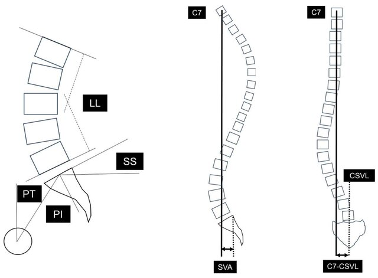
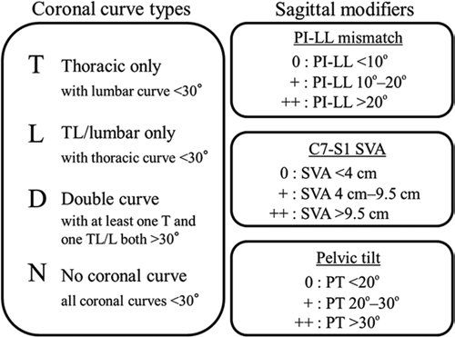

1) Description of Measurement
The SRS–Schwab ASD Classification (2012) classifies adult spinal deformity (ASD) based on radiographic parameters linked to pain, disability, and HRQOL. It improves earlier systems by including sagittal alignment and the spine-pelvis interaction. The system has two components.
2) Instructions to Measure
Imaging requirements: standing full-length AP and lateral radiographs, including C7 and both femoral heads.
3) Normal vs. Pathologic Ranges
Each sagittal modifier is graded by severity.
4) Important References
Terran J, Schwab F, Shaffrey CI, Smith JS, Devos P, Ames CP, Fu KM, Burton D, Hostin R, Klineberg E, Gupta M, Deviren V, Mundis G, Hart R, Bess S, Lafage V; International Spine Study Group. The SRS-Schwab adult spinal deformity classification: assessment and clinical correlations based on a prospective operative and nonoperative cohort. Neurosurgery. 2013 Oct;73(4):559-68. doi: 10.1227/NEU.0000000000000012. PMID: 23756751.
Lowe T, Berven SH, Schwab FJ, Bridwell KH. The SRS classification for adult spinal deformity: building on the King/Moe and Lenke classification systems. Spine (Phila Pa 1976). 2006 Sep 1;31(19 Suppl):S119-25. doi: 10.1097/01.brs.0000232709.48446.be. PMID: 16946628.
Bess S, Schwab F, Lafage V, Shaffrey CI, Ames CP. Classifications for adult spinal deformity and use of the Scoliosis Research Society-Schwab Adult Spinal Deformity Classification. Neurosurg Clin N Am. 2013 Apr;24(2):185-93. doi: 10.1016/j.nec.2012.12.008. PMID: 23561557.
Diebo BG, Varghese JJ, Lafage R, Schwab FJ, Lafage V. Sagittal alignment of the spine: What do you need to know? Clin Neurol Neurosurg. 2015 Dec;139:295-301. doi: 10.1016/j.clineuro.2015.10.024. Epub 2015 Oct 28. PMID: 26562194.
5) Other info....
Age-adjusted modifications (Lafage et al. 2022) have been proposed to account for age-related changes in alignment targets.